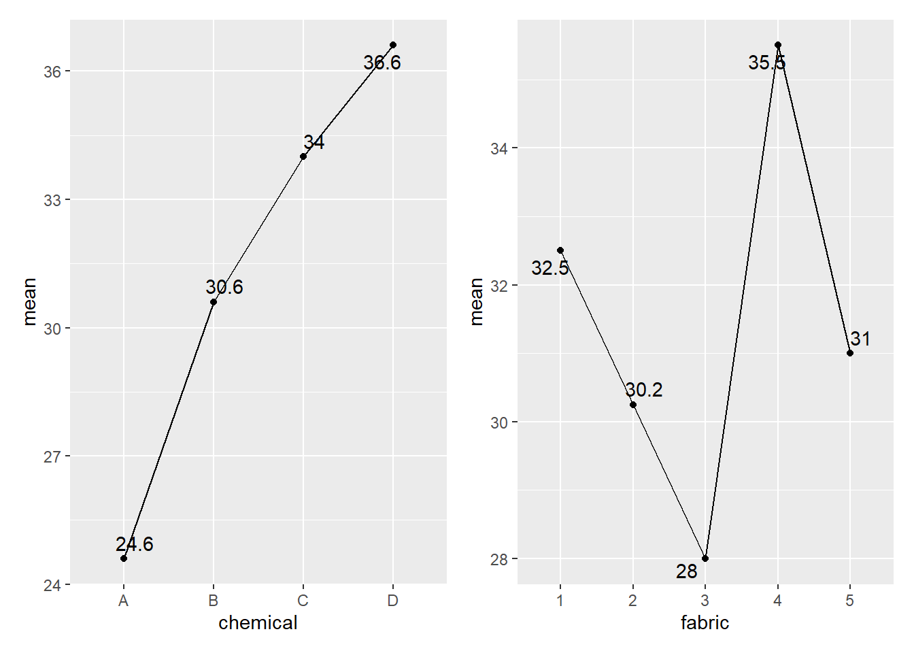

| Source | DF | SS | MS | F | P |
|---|---|---|---|---|---|
| Chemical type | … | … | … | … | 0.000 |
| Error | … | 219.6 | … | ||
| Total | … | 623 |
Question 1
Name the three basic principles in experimental design.
Why is replication important in experimental design?
What is the main purpose for using randomization in an experiment?
Water flow velocities have been suspected to affect the growth of fish species like California halibut (Paralichthys californicus). The California halibut (Paralichthys californicus) is an economically important flatfish species of Southern California in the USA. A study was carried out to test the effect of three relative water velocities of 0.5, 1.0, and 1.5 on the gain of bodyweight of California halibut over a period of 10 weeks. Nine rectangular tanks filled with fifteen (15) California halibut fish each were given to set the velocities to be tested. All the fish were of the same age, same weight, and same health status. Furthermore, all fish were fed the same food. All experimental tanks are the same in length, width, and depth. All tanks receive the same environmental conditions. Three experimental tanks were randomly assigned to each velocity. The experiment was fully randomized. After 10 weeks, the body weight of each fish was measured. Each fish was individually weighted and immediately returned to its respective experimental tank.
Write the following with reference to this experiment.
Experimental unit
Observation unit
Factor/ Factors tested
Factor levels
Treatments tested
Response variable
How many replicates are there for each treatment?
If you do this experiment, how would you employ randomization?
Write the most suitable statistical model for the experiment. Define all terms in it and state any assumptions you make regarding the model.
Question 2
An experiment was performed to determine the effect of four different chemicals on the strength of a fabric. These chemicals are used as part of the design printing process. Five different fabric samples were selected. The experiment was carried out by testing each chemical type on each fabric sample once in a random order. The data is shown in the table below.
These data were given to two students separately and asked to construct the ANOVA table to analyze. The results obtained by them are given below. Some values were missing in each ANOVA table and marked with a blank space (…).
- Complete each ANOVA table below (Copy the tables below in your answer script and complete it.)
Results of the first student
Results of the second student
| Source | DF | SS | MS | F | P |
|---|---|---|---|---|---|
| Chemical type | … | … | … | … | 0.000 |
| Fabric sample | … | 124.2 | … | … | 0.029 |
| Error | … | 95.4 | … | ||
| Total | … | 623 |
State the differences between the two approaches the two students had applied.
One student has obtained the following graph. Comment on it.

What is the best approach (first student approach or second student approach)? Justify your answer.
Write the effect model for the selected approach in part (iv) and define all the terms of it.
Write the hypothesis of the selected model to test the equality of treatment means and state your decision and conclusion. (No need to do multiple comparisons.)
Question 3
Twenty four (24) pieces of metal pipes were chosen for an experiment to examine if the quantity of corrosion is affected by the coating type or the soil type. The experiment uses two different coating types and three different soil types. Each metal item is coated with one of the two coatings and buried for a specific amount of time in one of the three types of soil, after which the quantity of corrosion is calculated. The data obtained is presented in the table below.
How many treatment combinations are tested in this experiment? What are they?
The mean plot of the above data is given below. Comment on it.
Write a suitable effect model for the experiment and state the hypotheses to be tested.
ANOVA table for the above experiment is given below. State your conclusions. Assume that the assumptions of the model are not violated.
Analysis of Variance Table
Response: corrosion_amount
Df Sum Sq Mean Sq F value Pr(>F)
soil_type 2 95.583 47.792 5.4532 0.014076 *
coating_type 1 100.042 100.042 11.4152 0.003346 **
soil_type:coating_type 2 67.583 33.792 3.8558 0.040392 *
Residuals 18 157.750 8.764
---
Signif. codes: 0 '***' 0.001 '**' 0.01 '*' 0.05 '.' 0.1 ' ' 1- For further investigation, the Tukey multiple comparison tests were performed. The results are given below. Comment on the results and what should you recommend to reduce the amount of corrosion (give reasons for your answer)?
Tukey multiple comparisons of means
95% family-wise confidence level
Fit: aov(formula = corrosion_amount ~ soil_type * coating_type, data = q3)
$soil_type
diff lwr upr p adj
2-1 4.750 0.9723052 8.527695 0.0128436
3-1 3.375 -0.4026948 7.152695 0.0846412
3-2 -1.375 -5.1526948 2.402695 0.6295541
$coating_type
diff lwr upr p adj
2-1 4.083333 1.544216 6.62245 0.0033461
$`soil_type:coating_type`
diff lwr upr p adj
2:1-1:1 4.00 -2.6526105 10.652611 0.4272548
3:1-1:1 -0.50 -7.1526105 6.152611 0.9998730
1:2-1:1 1.00 -5.6526105 7.652611 0.9963915
2:2-1:1 6.50 -0.1526105 13.152611 0.0577047
3:2-1:1 8.25 1.5973895 14.902611 0.0104439
3:1-2:1 -4.50 -11.1526105 2.152611 0.3071941
1:2-2:1 -3.00 -9.6526105 3.652611 0.7076774
2:2-2:1 2.50 -4.1526105 9.152611 0.8338901
3:2-2:1 4.25 -2.4026105 10.902611 0.3643703
1:2-3:1 1.50 -5.1526105 8.152611 0.9773677
2:2-3:1 7.00 0.3473895 13.652611 0.0358934
3:2-3:1 8.75 2.0973895 15.402611 0.0063084
2:2-1:2 5.50 -1.1526105 12.152611 0.1409369
3:2-1:2 7.25 0.5973895 13.902611 0.0281668
3:2-2:2 1.75 -4.9026105 8.402611 0.9566132Question 4
A materials science engineer is investigating the effects of four different catalysts (A, B, C, and D) on the reaction time of a chemical process. Each batch of new material is only large enough to permit four runs to be made. Furthermore, four lab assistants were selected for the study. To account for the source of variability due to batch and lab assistant, the engineer uses the Latin square design shown below.
- Is this a standard Latin square design? Give reasons for your answer.
Cont. page 6
- ANOVA table for the above experiment is given below. Write the model corresponding to the ANOVA. Define all terms in it. State any assumptions you make regarding the model.
Analysis of Variance Table
Response: Time
Df Sum Sq Mean Sq F value Pr(>F)
Batch 3 143.187 47.729 27.6024 0.0006573 ***
Lab_assistant 3 12.188 4.063 2.3494 0.1717719
Catalyst 3 72.188 24.063 13.9157 0.0041308 **
Residuals 6 10.375 1.729
---
Signif. codes: 0 '***' 0.001 '**' 0.01 '*' 0.05 '.' 0.1 ' ' 1Briefly explain how you check the validity of the model assumptions.
Assume that the estimated model in part (ii) satisfied all of the assumptions made regarding the error term. What conclusions can be drawn from the results of ANOVA table. You should clearly write the corresponding hypotheses, decision and conclusions.
Write one advantage and one disadvantage of a Latin square design.